06-docker网络模式
Docker网络
我们使用容器，不单是运行单机程序，当然是需要运行网络服务在容器中，那么如何配置docker的容器网络，基础网络配置，网桥配置，端口映射，还是很重要。
docker网络功能
docker的网络功能就是利用Linux的network namespace，network bridge，虚拟网络设备实现的。
默认情况下，docker安装完毕会生成网桥docker0，可以理解为是一个虚拟的交换机，对两端的数据转发。
docker的网络接口默认都是虚拟的网络接口。
Docker容器网络在宿主机和容器内分别创建一个虚拟接口，让他们彼此通信。
[root@docker-200 /www.yuchaoit.cn/harbor]#ifconfig docker0
docker0: flags=4099<UP,BROADCAST,MULTICAST> mtu 1500
inet 172.17.0.1 netmask 255.255.0.0 broadcast 172.17.255.255
inet6 fe80::42:3eff:feca:fa2b prefixlen 64 scopeid 0x20<link>
ether 02:42:3e:ca:fa:2b txqueuelen 0 (Ethernet)
RX packets 180132 bytes 9772747 (9.3 MiB)
RX errors 0 dropped 0 overruns 0 frame 0
TX packets 289156 bytes 448238750 (427.4 MiB)
TX errors 0 dropped 0 overruns 0 carrier 0 collisions 0
[root@docker-200 /www.yuchaoit.cn/harbor]#
- 创建一对虚拟接口，分别放到本地主机和新容器中。
- 宿主机一端桥接到默认的docker0，且有一个唯一的名字。
- 另一端放入容器里，改名为eth0，该接口只能在容器的命名空间里可见。
- 从网桥可用地址段获取一个空闲ip，分配给容器的eth0，且配置默认路由桥接到宿主机网卡
- 完成这些之后，容器可以使用eth0虚拟网卡和其他容器连接。
docker run 启动的时候，若没有添加--net参数，默认使用bridge桥接模式
docker实际是通过iptables做了DNAT规则，实现端口转发
docker网络图解
首先，要实现网络通信，机器需要至少一个网络接口（物理接口或虚拟接口）来收发数据包；此外，如果不同子网之间要进行通信，需要路由机制。
Docker 中的网络接口默认都是虚拟的接口。虚拟接口的优势之一是转发效率较高。
Linux 通过在内核中进行数据复制来实现虚拟接口之间的数据转发，发送接口的发送缓存中的数据包被直接复制到接收接口的接收缓存中。对于本地系统和容器内系统看来就像是一个正常的以太网卡，只是它不需要真正同外部网络设备通信，速度要快很多。
Docker 容器网络就利用了这项技术。它在本地主机和容器内分别创建一个虚拟接口，并让它们彼此连通（这样的一对接口叫做 veth pair）。
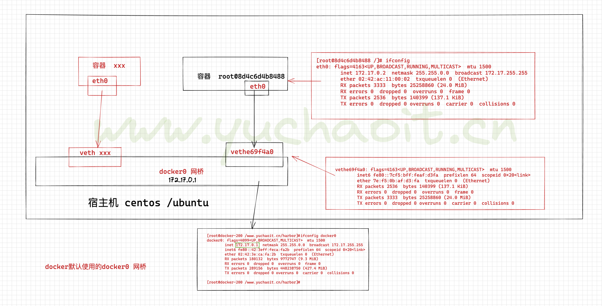
当 Docker 启动时，会自动在主机上创建一个 docker0 虚拟网桥，实际上是 Linux 的一个 bridge，可以理解为一个软件交换机。它会在挂载到它的网口之间进行转发。
同时，Docker 随机分配一个本地未占用的私有网段（在 RFC1918 中定义）中的一个地址给 docker0 接口。
比如典型的 172.17.42.1，掩码为 255.255.0.0。
此后启动的容器内的网口也会自动分配一个同一网段（172.17.0.0/16）的地址。
当创建一个 Docker 容器的时候，同时会创建了一对 veth pair 接口（当数据包发送到一个接口时，另外一个接口也可以收到相同的数据包）。
这对接口一端在容器内，即 eth0；另一端在本地并被挂载到 docker0 网桥，名称以 veth 开头（例如 vethAQI2QT）。
通过这种方式，主机可以跟容器通信，容器之间也可以相互通信。
Docker 就创建了在主机和所有容器之间一个虚拟共享网络。
接下来的部分将介绍在一些场景中，Docker 所有的网络定制配置。以及通过 Linux 命令来调整、补充、甚至替换 Docker 默认的网络配置。
关于docker网络相关命令
下面是一个跟 Docker 网络相关的命令列表。
其中有些命令选项只有在 Docker 服务启动的时候才能配置，而且不能马上生效。
-b BRIDGE 或 --bridge=BRIDGE 指定容器挂载的网桥
--bip=CIDR 定制 docker0 的掩码
-H SOCKET... 或 --host=SOCKET... Docker 服务端接收命令的通道
--icc=true|false 是否支持容器之间进行通信
--ip-forward=true|false 请看下文容器之间的通信
--iptables=true|false 是否允许 Docker 添加 iptables 规则
--mtu=BYTES 容器网络中的 MTU
下面2个命令选项既可以在启动服务时指定，也可以在启动容器时指定。在 Docker 服务启动的时候指定则会成为默认值，后面执行 docker run 时可以覆盖设置的默认值。
--dns=IP_ADDRESS... 使用指定的DNS服务器
--dns-search=DOMAIN... 指定DNS搜索域
最后这些选项只有在 docker run 执行时使用，因为它是针对容器的特性内容。
-h HOSTNAME 或 --hostname=HOSTNAME 配置容器主机名
--link=CONTAINER_NAME:ALIAS 添加到另一个容器的连接
--net=bridge|none|container:NAME_or_ID|host 配置容器的桥接模式
-p SPEC 或 --publish=SPEC 映射容器端口到宿主主机
-P or --publish-all=true|false 映射容器所有端口到宿主主机
容器访问控制
容器的访问控制，主要通过 Linux 上的 iptables 防火墙来进行管理和实现。
iptables 是 Linux 上默认的防火墙软件，在大部分发行版中都自带。
容器访问外部网络
容器要想访问外部网络，需要本地系统的转发支持。在Linux 系统中，检查转发是否打开。
$sysctl net.ipv4.ip_forward
net.ipv4.ip_forward = 1
如果为 0，说明没有开启转发，则需要手动打开。
$sysctl -w net.ipv4.ip_forward=1
如果在启动 Docker 服务的时候设定 --ip-forward=true, Docker 就会自动设定系统的 ip_forward 参数为 1。
容器之间访问
容器之间相互访问，需要两方面的支持。
容器的网络拓扑是否已经互联。
默认情况下，所有容器都会被连接到 docker0 网桥上。
要看要本地系统的防火墙软件 -- iptables 是否允许通过。
1.Docker四种网卡模式(面试问)
--net 参数
--net=bridge 这个是默认值，连接到默认的网桥docker0，这个模式给容器自动分配IP，且通过iptables的nat表和宿主机实现数据通信。
--net=host 告诉 Docker 不要将容器网络放到隔离的命名空间中，即不要容器化容器内的网络。此时容器使用本地主机的网络，它拥有完全的本地主机接口访问权限。
容器进程可以跟主机其它 root 进程一样可以打开低范围的端口，可以访问本地网络服务比如 D-bus，还可以让容器做一些影响整个主机系统的事情，比如重启主机。
因此使用这个选项的时候要非常小心。如果进一步的使用 --privileged=true，容器会被允许直接配置主机的网络堆栈。
--net=container:NAME_or_ID 让 Docker 将新建容器的进程放到一个已存在容器的网络栈中，新容器进程有自己的文件系统、进程列表和资源限制，但会和已存在的容器共享 IP 地址和端口等网络资源，两者进程可以直接通过 lo 环回接口通信。
--net=none 让 Docker 将新容器放到隔离的网络栈中，但是不进行网络配置。之后，用户可以自己进行配置。
查看docker的网络模式
查看当前docker已有的网络配置
[root@docker-200 ~]#docker network ls
NETWORK ID NAME DRIVER SCOPE
6cb9ed4cc353 bridge bridge local
6d71aada2627 harbor_harbor bridge local
f3971eca0c0f host host local
ff6208d689fb none null local
查看docker0默认网桥
[root@docker-200 ~]#ifconfig docker0
docker0: flags=4099<UP,BROADCAST,MULTICAST> mtu 1500
inet 172.17.0.1 netmask 255.255.0.0 broadcast 172.17.255.255
inet6 fe80::42:3eff:feca:fa2b prefixlen 64 scopeid 0x20<link>
ether 02:42:3e:ca:fa:2b txqueuelen 0 (Ethernet)
RX packets 182668 bytes 9877642 (9.4 MiB)
RX errors 0 dropped 0 overruns 0 frame 0
TX packets 292481 bytes 473496962 (451.5 MiB)
TX errors 0 dropped 0 overruns 0 carrier 0 collisions 0
[root@docker-200 ~]#
# 安装网桥管理工具
[root@docker-200 ~]#yum install bridge-utils -y
[root@docker-200 ~]#brctl show
bridge name bridge id STP enabled interfaces
br-6d71aada2627 8000.02420be0d11c no veth074229e
docker0 8000.02423ecafa2b no
查看实际容器创建的虚拟网卡
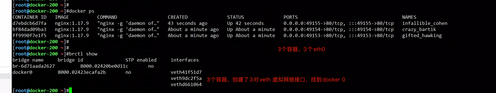
[root@docker-200 ~]#ifconfig |grep veth
veth41f51d7: flags=4163<UP,BROADCAST,RUNNING,MULTICAST> mtu 1500
veth9dc2f5a: flags=4163<UP,BROADCAST,RUNNING,MULTICAST> mtu 1500
vethd661064: flags=4163<UP,BROADCAST,RUNNING,MULTICAST> mtu 1500
查看端口映射与防火墙的关系
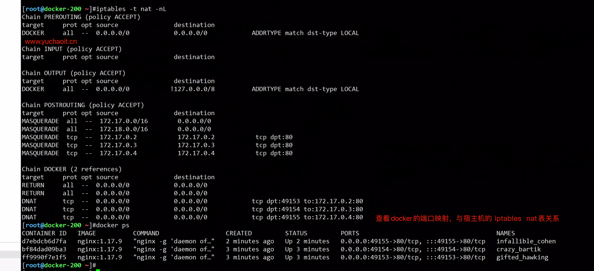
2.玩一玩bridge模式
容器桥接网络原理
1. 当docker daemon第一次启动后，创建了一个虚拟的网桥，名字是docker0
2. 创建后，给这个网桥，默认分配一个子网，默认是172.17.0.1/16
3. 每创建一个容器，都自动创建一个veth设备对儿，一个关联docker0，另一端挂载容器里，叫做eth0，并且从网桥的地址段里，分配一个ip给容器，因此实现通信。
[root@docker-200 /etc/sysconfig/network-scripts]#docker inspect ff9|grep -i '"IPAddress"'
"IPAddress": "172.17.0.2",
"IPAddress": "172.17.0.2",
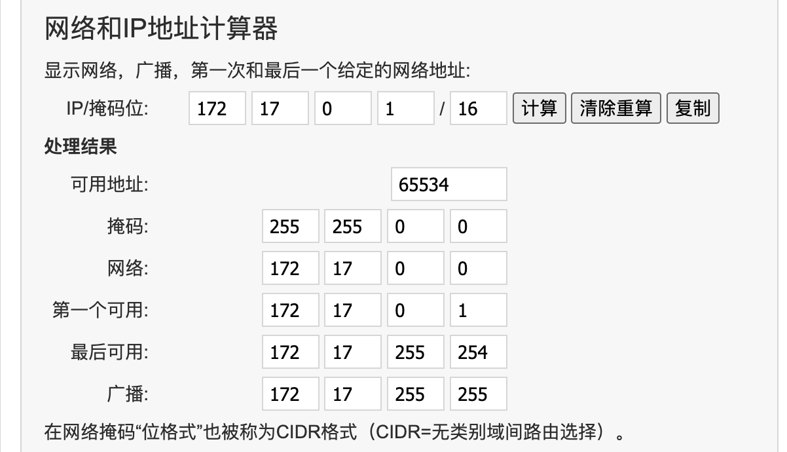
桥接网络模式特点
1. 同一个宿主机的容器可以相互连接，不同宿主机的不可以（iptables也不在一个机器么）
2.桥接模式的容器自动获取172.17.0.0/16网段的IP地址
[root@7dc8c7225862 /]# ifconfig |grep 172
inet 172.17.0.5 netmask 255.255.0.0 broadcast 172.17.255.255
3.其他机器无法直接访问容器，需要通过端口映射。
4.每个容器映射到宿主机的端口，也唯一
5.容器可以借助宿主机的网络环境，访问其他机器。
桥接数据图
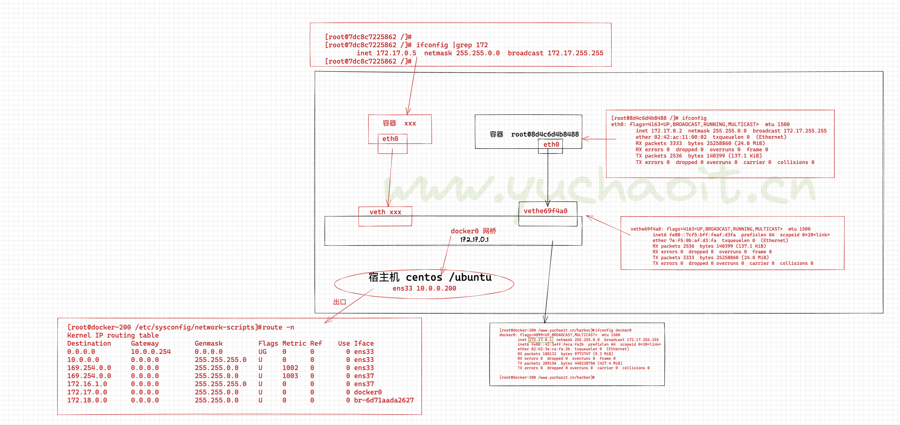
查看bridge模式详细
[root@docker-200 /etc/sysconfig/network-scripts]#docker network inspect bridge |jq
[
{
"Name": "bridge",
"Id": "6cb9ed4cc353820c6753626de168b20dcf3d86ee3e6284318a98dac10d1a6864",
"Created": "2022-08-27T22:02:43.680182817+08:00",
"Scope": "local",
"Driver": "bridge",
"EnableIPv6": false,
"IPAM": {
"Driver": "default",
"Options": null,
"Config": [
{
"Subnet": "172.17.0.0/16",
"Gateway": "172.17.0.1"
}
]
},
"Internal": false,
"Attachable": false,
"Ingress": false,
"ConfigFrom": {
"Network": ""
},
"ConfigOnly": false,
"Containers": {
"bf84dad09ba34fd27dc3c743532c62227a104c38a8bc05cd89197f7507b7c12c": {
"Name": "crazy_bartik",
"EndpointID": "305fb33cef0514efb339ac3e7da0415c4bd382aab3b3db5923a7261a0d70ec80",
"MacAddress": "02:42:ac:11:00:03",
"IPv4Address": "172.17.0.3/16",
"IPv6Address": ""
},
"d7ebdcb6d7fa45c8fc4e202bfb0bb049626166ff5e72453af69929e365ffc57e": {
"Name": "infallible_cohen",
"EndpointID": "51afb25f958f72f9c8c21b72779c3a36dab40953fdd74d58eb9b912a5e7cb4f7",
"MacAddress": "02:42:ac:11:00:04",
"IPv4Address": "172.17.0.4/16",
"IPv6Address": ""
},
"ff9990f7e1f5fb14b486e59ad4087e9bf8ddd61a4d8cfdd5ff66b7036df75b08": {
"Name": "gifted_hawking",
"EndpointID": "c14577fa81212e1824bfcaccf45a85d5b85a64b81f02e35e41bfa08a8cbdd0ba",
"MacAddress": "02:42:ac:11:00:02",
"IPv4Address": "172.17.0.2/16",
"IPv6Address": ""
}
},
"Options": {
"com.docker.network.bridge.default_bridge": "true",
"com.docker.network.bridge.enable_icc": "true",
"com.docker.network.bridge.enable_ip_masquerade": "true",
"com.docker.network.bridge.host_binding_ipv4": "0.0.0.0",
"com.docker.network.bridge.name": "docker0",
"com.docker.network.driver.mtu": "1500"
},
"Labels": {}
}
]
[root@docker-200 /etc/sysconfig/network-scripts]#docker network inspect bridge |jq
基于busybox容器调试网络
1.默认其他的镜像，都没有网络工具，比较烦人，要么你就用自定义的
2.使用瑞士军刀，调试容器busybox
完整命令
[root@docker-200 /etc/sysconfig/network-scripts]#docker run -it busybox /bin/sh
Unable to find image 'busybox:latest' locally
latest: Pulling from library/busybox
5cc84ad355aa: Pull complete
Digest: sha256:5acba83a746c7608ed544dc1533b87c737a0b0fb730301639a0179f9344b1678
Status: Downloaded newer image for busybox:latest
/ # cd
~ # ifconfig
eth0 Link encap:Ethernet HWaddr 02:42:AC:11:00:05
inet addr:172.17.0.5 Bcast:172.17.255.255 Mask:255.255.0.0
UP BROADCAST RUNNING MULTICAST MTU:1500 Metric:1
RX packets:8 errors:0 dropped:0 overruns:0 frame:0
TX packets:0 errors:0 dropped:0 overruns:0 carrier:0
collisions:0 txqueuelen:0
RX bytes:648 (648.0 B) TX bytes:0 (0.0 B)
lo Link encap:Local Loopback
inet addr:127.0.0.1 Mask:255.0.0.0
UP LOOPBACK RUNNING MTU:65536 Metric:1
RX packets:0 errors:0 dropped:0 overruns:0 frame:0
TX packets:0 errors:0 dropped:0 overruns:0 carrier:0
collisions:0 txqueuelen:1000
RX bytes:0 (0.0 B) TX bytes:0 (0.0 B)
~ # route -n
Kernel IP routing table
Destination Gateway Genmask Flags Metric Ref Use Iface
0.0.0.0 172.17.0.1 0.0.0.0 UG 0 0 0 eth0
172.17.0.0 0.0.0.0 255.255.0.0 U 0 0 0 eth0
~ # ping 10.0.0.200 -c 3
PING 10.0.0.200 (10.0.0.200): 56 data bytes
64 bytes from 10.0.0.200: seq=0 ttl=64 time=0.115 ms
64 bytes from 10.0.0.200: seq=1 ttl=64 time=0.079 ms
64 bytes from 10.0.0.200: seq=2 ttl=64 time=0.152 ms
--- 10.0.0.200 ping statistics ---
3 packets transmitted, 3 packets received, 0% packet loss
round-trip min/avg/max = 0.079/0.115/0.152 ms
~ # traceroute 10.0.0.200
traceroute to 10.0.0.200 (10.0.0.200), 30 hops max, 46 byte packets
1 10.0.0.200 (10.0.0.200) 0.012 ms 0.010 ms 0.009 ms
若是遇见要自定义容器网段的需求
Docker 服务默认会创建一个 docker0 网桥（其上有一个 docker0 内部接口），它在内核层连通了其他的物理或虚拟网卡，这就将所有容器和本地主机都放到同一个物理网络。
Docker 默认指定了 docker0 接口 的 IP 地址和子网掩码，让主机和容器之间可以通过网桥相互通信，它还给出了 MTU（接口允许接收的最大传输单元），通常是 1500 Bytes，或宿主主机网络路由上支持的默认值。这些值都可以在服务启动的时候进行配置。
--bip=CIDRIP 地址加掩码格式，例如 192.168.1.5/24--mtu=BYTES覆盖默认的 Docker mtu 配置
也可以在配置文件中配置 DOCKER_OPTS，然后重启服务。
由于目前 Docker 网桥是 Linux 网桥，用户可以使用 brctl show 来查看网桥和端口连接信息。
1. 修改docker配置文件
{
"bip":"192.168.2.1/24",
"registry-mirrors" : [
"https://ms9glx6x.mirror.aliyuncs.com"
],
"insecure-registries":["http://10.0.0.200"]
}
[root@docker-200 /etc/sysconfig/network-scripts]#
2.重启docker
[root@docker-200 /etc/sysconfig/network-scripts]#systemctl restart docker
[root@docker-200 /etc/sysconfig/network-scripts]#ifconfig docker0
docker0: flags=4099<UP,BROADCAST,MULTICAST> mtu 1500
inet 192.168.2.1 netmask 255.255.255.0 broadcast 192.168.2.255
inet6 fe80::42:3eff:feca:fa2b prefixlen 64 scopeid 0x20<link>
ether 02:42:3e:ca:fa:2b txqueuelen 0 (Ethernet)
RX packets 182678 bytes 9878185 (9.4 MiB)
RX errors 0 dropped 0 overruns 0 frame 0
TX packets 292490 bytes 473497746 (451.5 MiB)
TX errors 0 dropped 0 overruns 0 carrier 0 collisions 0
3.创建新容器测试
[root@docker-200 /etc/sysconfig/network-scripts]#docker run -it --rm busybox /bin/sh
/ # ip addr show
1: lo: <LOOPBACK,UP,LOWER_UP> mtu 65536 qdisc noqueue qlen 1000
link/loopback 00:00:00:00:00:00 brd 00:00:00:00:00:00
inet 127.0.0.1/8 scope host lo
valid_lft forever preferred_lft forever
313: eth0@if314: <BROADCAST,MULTICAST,UP,LOWER_UP,M-DOWN> mtu 1500 qdisc noqueue
link/ether 02:42:c0:a8:02:02 brd ff:ff:ff:ff:ff:ff
inet 192.168.2.2/24 brd 192.168.2.255 scope global eth0
valid_lft forever preferred_lft forever
/ # route -n
Kernel IP routing table
Destination Gateway Genmask Flags Metric Ref Use Iface
0.0.0.0 192.168.2.1 0.0.0.0 UG 0 0 0 eth0
192.168.2.0 0.0.0.0 255.255.255.0 U 0 0 0 eth0
/ #
/ #
/ # ping 192.168.2.1 -c 2
PING 192.168.2.1 (192.168.2.1): 56 data bytes
64 bytes from 192.168.2.1: seq=0 ttl=64 time=0.058 ms
64 bytes from 192.168.2.1: seq=1 ttl=64 time=0.080 ms
--- 192.168.2.1 ping statistics ---
2 packets transmitted, 2 packets received, 0% packet loss
round-trip min/avg/max = 0.058/0.069/0.080 ms
/ #
/ #
/ # ping 10.0.0.200 -c 2
PING 10.0.0.200 (10.0.0.200): 56 data bytes
64 bytes from 10.0.0.200: seq=0 ttl=64 time=0.112 ms
64 bytes from 10.0.0.200: seq=1 ttl=64 time=0.077 ms
--- 10.0.0.200 ping statistics ---
2 packets transmitted, 2 packets received, 0% packet loss
round-trip min/avg/max = 0.077/0.094/0.112 ms
/ #
3.玩一玩host模式
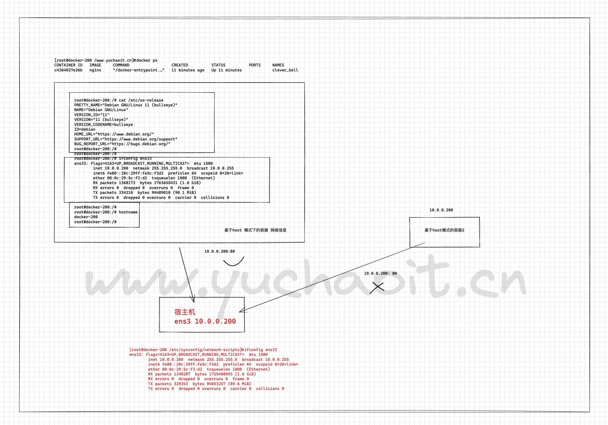
原理（背）
1. hosts启动的容器，没有自己的网卡，ip信息，直接用宿主机的
2. 但是除了network网络空间，其他如进程，文件系统，还是容器自己的
3. 通过参数 --network host 开启
4. host模式，没有端口映射功能
5.直接使用宿主机的网络环境，因此网络性能更高一筹。
host模式实战
1.看看宿主机端口
[root@docker-200 /www.yuchaoit.cn]#netstat -tunlp
Active Internet connections (only servers)
Proto Recv-Q Send-Q Local Address Foreign Address State PID/Program name
tcp 0 0 0.0.0.0:22 0.0.0.0:* LISTEN 1021/sshd
tcp 0 0 127.0.0.1:25 0.0.0.0:* LISTEN 1254/master
tcp6 0 0 :::22 :::* LISTEN 1021/sshd
tcp6 0 0 ::1:25 :::* LISTEN 1254/master
[root@docker-200 /www.yuchaoit.cn]#
2.运行容器
[root@docker-200 /www.yuchaoit.cn]#docker run -d --network host nginx
3.查看端口，进程，即可分析出host模式的原理
4. 访问容器nginx
10.0.0.200
5.修改容器内nginx页面
[root@docker-200 /www.yuchaoit.cn]#docker ps
CONTAINER ID IMAGE COMMAND CREATED STATUS PORTS NAMES
c4364027e26b nginx "/docker-entrypoint.…" 2 minutes ago Up 2 minutes clever_bell
[root@docker-200 /www.yuchaoit.cn]#docker exec -it clever_bell bash
cat >/etc/apt/sources.list <<'EOF'
deb http://mirrors.aliyun.com/ubuntu/ trusty main restricted universe multiverse
deb http://mirrors.aliyun.com/ubuntu/ trusty-security main restricted universe multiverse
deb http://mirrors.aliyun.com/ubuntu/ trusty-updates main restricted universe multiverse
deb http://mirrors.aliyun.com/ubuntu/ trusty-proposed main restricted universe multiverse
deb http://mirrors.aliyun.com/ubuntu/ trusty-backports main restricted universe multiverse
deb-src http://mirrors.aliyun.com/ubuntu/ trusty main restricted universe multiverse
deb-src http://mirrors.aliyun.com/ubuntu/ trusty-security main restricted universe multiverse
deb-src http://mirrors.aliyun.com/ubuntu/ trusty-updates main restricted universe multiverse
deb-src http://mirrors.aliyun.com/ubuntu/ trusty-proposed main restricted universe multiverse
deb-src http://mirrors.aliyun.com/ubuntu/ trusty-backports main restricted universe multiverse
EOF
6.更新容器内信息
apt update
root@docker-200:/# apt install iproute2 net-tools -y
查看容器内网络信息，而然看到的是宿主机的网络配置
ifconfig
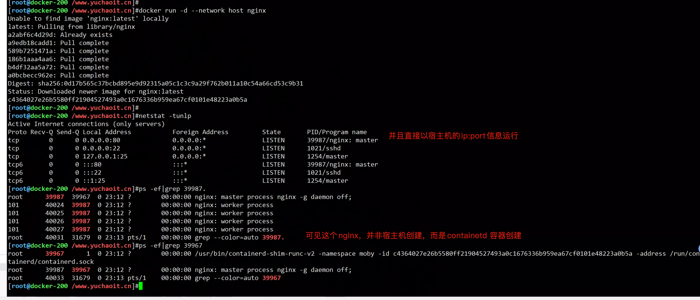
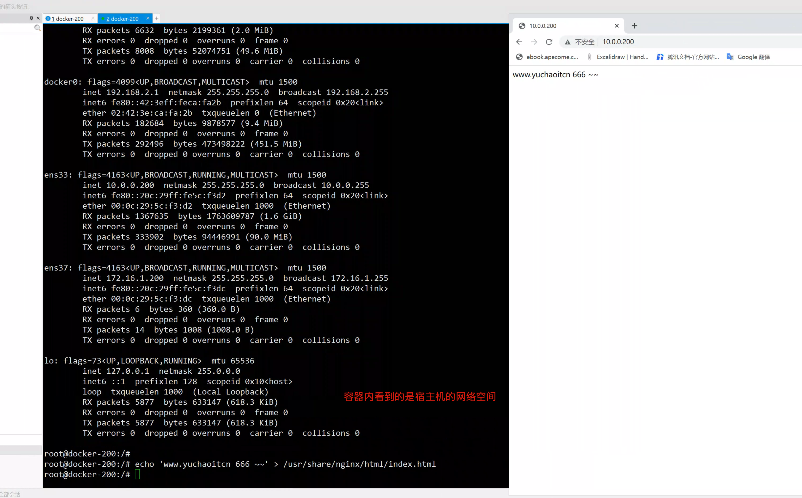
4.container模式
1. container模式的容器是使用另一个已存在的容器，共享它的网络空间
2. container模式下的网络空间，和宿主机是隔离的
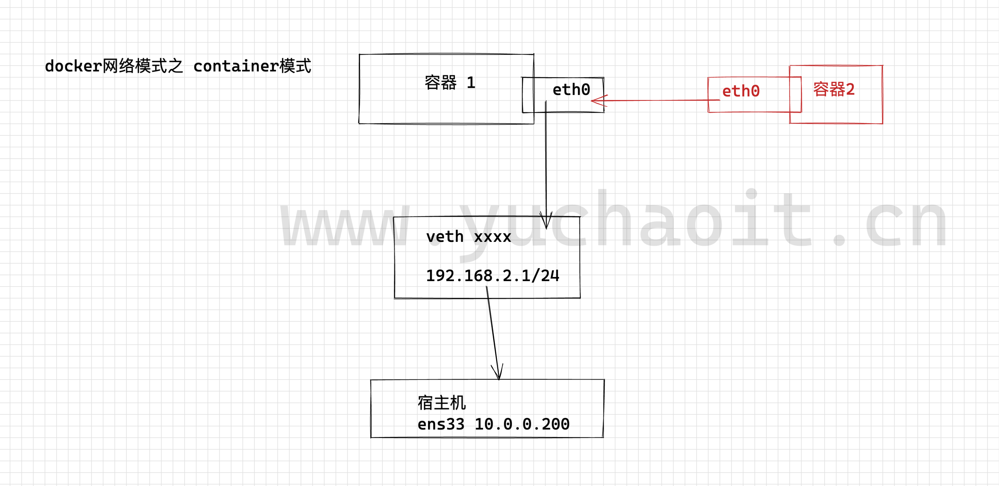
实战
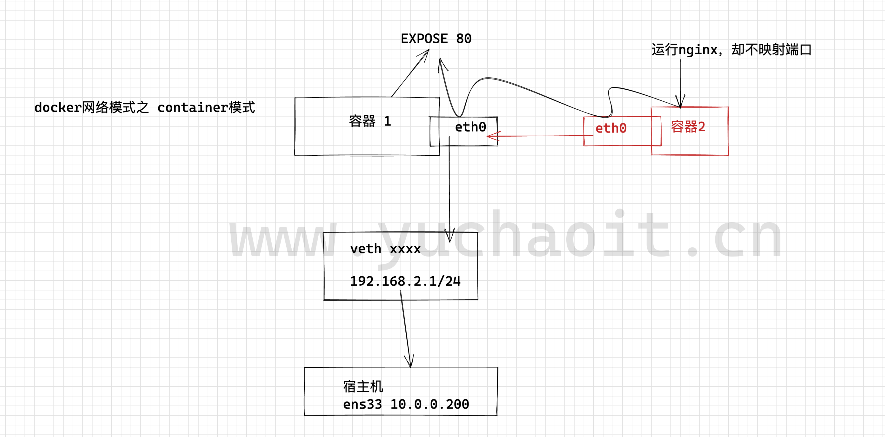
1.准备一个容器
[root@docker-200 /www.yuchaoit.cn]#docker run -it --name expose-80 -p 80:80 centos:7.6.1810
[root@3739c811d393 /]#
[root@3739c811d393 /]# curl 127.0.0.1
curl: (7) Failed connect to 127.0.0.1:80; Connection refused
2.再来一个容器
[root@docker-200 ~]#
[root@docker-200 ~]#docker run -d --name to_nginx --network container:expose-80 nginx
10e9d3472f7254db2e9790d4e01a97d617321e8226ef35dd8be763a2b5077ba4
[root@docker-200 ~]#
[root@docker-200 ~]#
3.宿主机测试
[root@docker-200 ~]#docker inspect -f '{{.Name}} - {{.NetworkSettings.IPAddress }}' $(docker ps -aq)
/to_nginx -
/expose-80 - 192.168.2.2
[root@docker-200 ~]#
4.查看nginx结果
[root@docker-200 ~]#curl -I 192.168.2.2
HTTP/1.1 200 OK
Server: nginx/1.21.5
Date: Sat, 27 Aug 2022 15:39:35 GMT
Content-Type: text/html
Content-Length: 615
Last-Modified: Tue, 28 Dec 2021 15:28:38 GMT
Connection: keep-alive
ETag: "61cb2d26-267"
Accept-Ranges: bytes
[root@docker-200 ~]#
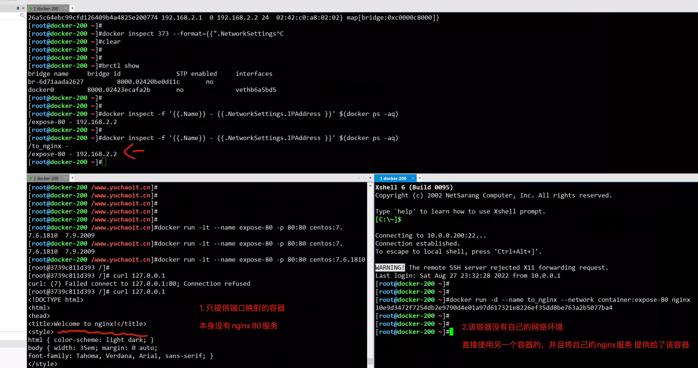
5.查看None模式
None模式原理
1.None模式是不创建任何网络信息，这个模式几乎不用。
2.若是给none模式的容器创建网络环境，得自己基于ip命令去创建网络名称空间，操作较为复杂。
实践
[root@docker-200 ~]#docker run --network none -it busybox /bin/sh
/ #
/ #
/ # ifconfig
lo Link encap:Local Loopback
inet addr:127.0.0.1 Mask:255.0.0.0
UP LOOPBACK RUNNING MTU:65536 Metric:1
RX packets:0 errors:0 dropped:0 overruns:0 frame:0
TX packets:0 errors:0 dropped:0 overruns:0 carrier:0
collisions:0 txqueuelen:1000
RX bytes:0 (0.0 B) TX bytes:0 (0.0 B)
/ #
/ #
/ # ip addr show
1: lo: <LOOPBACK,UP,LOWER_UP> mtu 65536 qdisc noqueue qlen 1000
link/loopback 00:00:00:00:00:00 brd 00:00:00:00:00:00
inet 127.0.0.1/8 scope host lo
valid_lft forever preferred_lft forever
/ #
/ #
/ # route -n
Kernel IP routing table
Destination Gateway Genmask Flags Metric Ref Use Iface
/ #
/ #
/ #
/ # ping 10.0.0.200
PING 10.0.0.200 (10.0.0.200): 56 data bytes
ping: sendto: Network is unreachable
/ #
6.自定义网络模式
1.例如自定义创建一个网桥，分配一个子网，使用该网桥的容器互相之间，可以直接通信
2.创建自定义网络语法
docke network create -d <mode> --subnet <CIDR> --gateway <网关> <自定义网络名字>
# 引用自定义网络
docker run --network <自定义网络名> <镜像名>
# 删除自定义网络
docker network rm <自定义网络名>
实践
1. 创建自定义网络
docker network create -d bridge --subnet 192.168.55.0/24 --gateway 192.168.2.1 www.yuchaoit.cn_net
2.查看自定义网络
[root@docker-200 ~]#docker network create -d bridge --subnet 192.168.55.0/24 --gateway 192.168.55.1 www.yuchaoit.cn_net
9e2641d14fcad4c5b0e4000a16df68affeb198476d5472a8d40665e34bd5e0cc
[root@docker-200 ~]#docker network ls
NETWORK ID NAME DRIVER SCOPE
2c43f9897ff2 bridge bridge local
6d71aada2627 harbor_harbor bridge local
f3971eca0c0f host host local
ff6208d689fb none null local
9e2641d14fca www.yuchaoit.cn_net bridge local
3.查看网卡情况
[root@docker-200 ~]#ip addr show br-9e2641d14fca
317: br-9e2641d14fca: <NO-CARRIER,BROADCAST,MULTICAST,UP> mtu 1500 qdisc noqueue state DOWN group default
link/ether 02:42:1d:cc:79:81 brd ff:ff:ff:ff:ff:ff
inet 192.168.55.1/24 brd 192.168.55.255 scope global br-9e2641d14fca
valid_lft forever preferred_lft forever
[root@docker-200 ~]#
4.查看宿主机的网桥
[root@docker-200 ~]#brctl show
bridge name bridge id STP enabled interfaces
br-6d71aada2627 8000.02420be0d11c no
br-9e2641d14fca 8000.02421dcc7981 no
docker0 8000.02423ecafa2b no
5.创建容器，用自建的网桥
[root@docker-200 ~]#
[root@docker-200 ~]#docker run --name busybox_myself_net -it --network www.yuchaoit.cn_net busybox /bin/sh
/ # ifconfig
eth0 Link encap:Ethernet HWaddr 02:42:C0:A8:37:02
inet addr:192.168.55.2 Bcast:192.168.55.255 Mask:255.255.255.0
UP BROADCAST RUNNING MULTICAST MTU:1500 Metric:1
RX packets:11 errors:0 dropped:0 overruns:0 frame:0
TX packets:0 errors:0 dropped:0 overruns:0 carrier:0
collisions:0 txqueuelen:0
RX bytes:946 (946.0 B) TX bytes:0 (0.0 B)
lo Link encap:Local Loopback
inet addr:127.0.0.1 Mask:255.0.0.0
UP LOOPBACK RUNNING MTU:65536 Metric:1
RX packets:0 errors:0 dropped:0 overruns:0 frame:0
TX packets:0 errors:0 dropped:0 overruns:0 carrier:0
collisions:0 txqueuelen:1000
RX bytes:0 (0.0 B) TX bytes:0 (0.0 B)
/ # ping 10.0.0.200
PING 10.0.0.200 (10.0.0.200): 56 data bytes
64 bytes from 10.0.0.200: seq=0 ttl=64 time=0.264 ms
64 bytes from 10.0.0.200: seq=1 ttl=64 time=0.139 ms
^C
--- 10.0.0.200 ping statistics ---
2 packets transmitted, 2 packets received, 0% packet loss
round-trip min/avg/max = 0.139/0.201/0.264 ms
/ #
/ #
/ # route -n
Kernel IP routing table
Destination Gateway Genmask Flags Metric Ref Use Iface
0.0.0.0 192.168.55.1 0.0.0.0 UG 0 0 0 eth0
192.168.55.0 0.0.0.0 255.255.255.0 U 0 0 0 eth0
/ #
/ #
/ # traceroute 10.0.0.200
traceroute to 10.0.0.200 (10.0.0.200), 30 hops max, 46 byte packets
1 10.0.0.200 (10.0.0.200) 0.014 ms 0.009 ms 0.008 ms
/ #
6.再运行第二个容器，查看2个容器的网络连接性
docker run --name busybox2_myself_net -it --network www.yuchaoit.cn_net busybox /bin/sh
7.容器之间可以通过主机名通信
ping busybox2_myself_net -c 2
ping busybox_myself_net -c 2
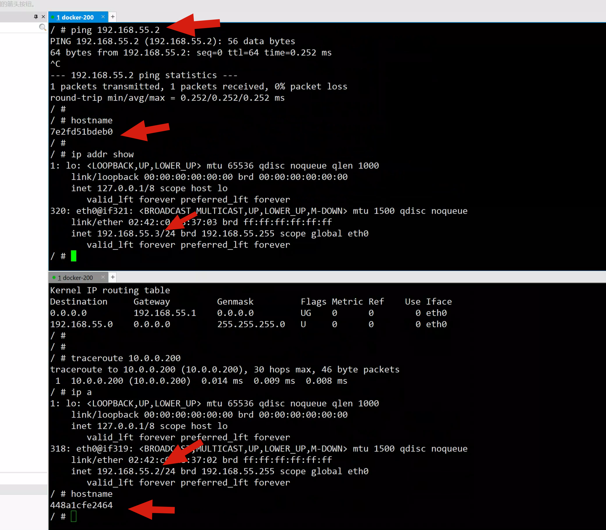
技巧，提取docker容器ip
1. 进入容器内部后
cat /etc/hosts
会显示自己以及(– link)软连接的容器IP
2.使用命令
docker inspect <container id>
或
docker inspect -f '{{range .NetworkSettings.Networks}}{{.IPAddress}}{{end}}' container_name_or_id
3.要获取所有容器名称及其IP地址只需一个命令。
docker inspect -f '{{.Name}} - {{.NetworkSettings.IPAddress }}' $(docker ps -aq)
如果使用docker-compose命令将是：
docker inspect -f '{{.Name}} - {{range .NetworkSettings.Networks}}{{.IPAddress}}{{end}}' $(docker ps -aq)
4.显示所有容器IP地址：
docker inspect --format='{{.Name}} - {{range .NetworkSettings.Networks}}{{.IPAddress}}{{end}}' $(docker ps -aq)
-----------------------------------------------------------------------------------------------
经验：可以考虑在 ~/.bashrc 中写一个 bash 函数：
function docker_ip() {
sudo docker inspect -f '{{range .NetworkSettings.Networks}}{{.IPAddress}}{{end}}' $1
}
function dockeriplist() {
sudo docker inspect -f '{{.Name}} - {{range .NetworkSettings.Networks}}{{.IPAddress}}{{end}}' $(docker ps -aq)
}
执行docker_ip <container-ID>可以看到单个容器的IP
执行dockeriplist 可以列出所有的IP